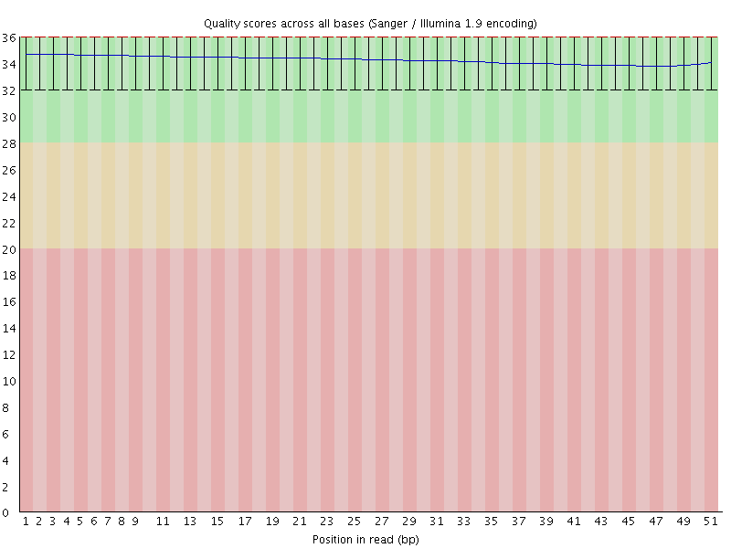
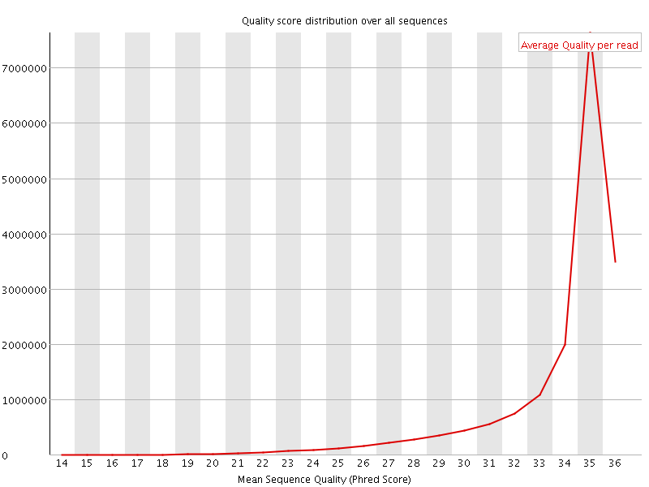
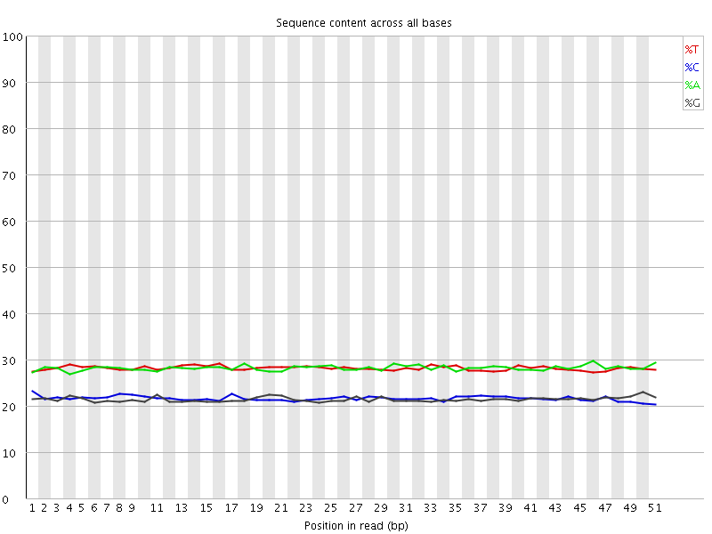
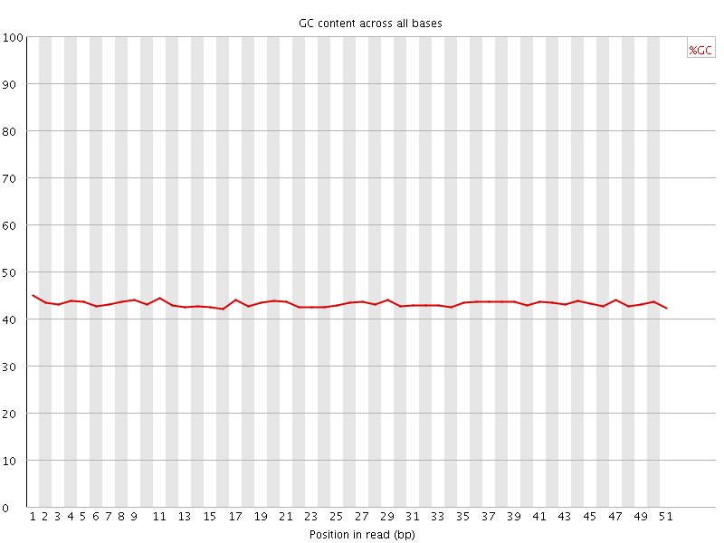
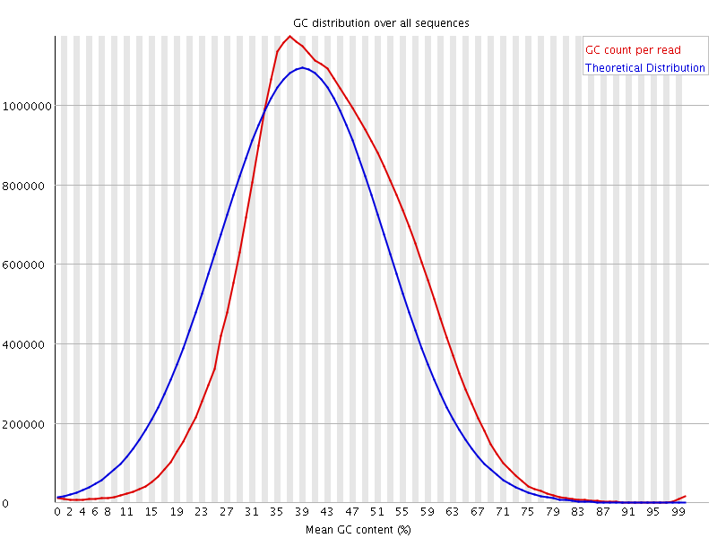
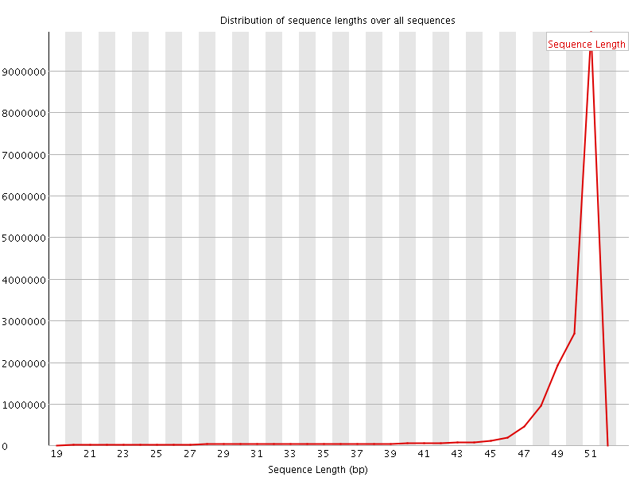
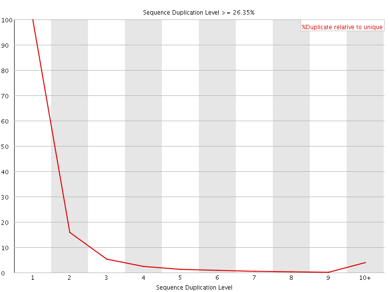
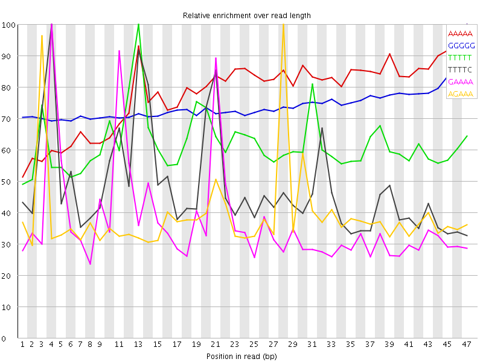

![[OK]](Icons/tick.png) Basic Statistics
Basic Statistics
| Measure | Value |
|---|---|
| Filename | 030-F0_S1_L003_R2_001_trimmed.fq.gz |
| File type | Conventional base calls |
| Encoding | Sanger / Illumina 1.9 |
| Total Sequences | 17506196 |
| Filtered Sequences | 0 |
| Sequence length | 20-51 |
| %GC | 43 |
Per base sequence quality

Per sequence quality scores

Per base sequence content

Per base GC content

![[WARN]](Icons/warning.png) Per sequence GC content
Per sequence GC content

Per base N content

Sequence Length Distribution

Sequence Duplication Levels

Overrepresented sequences
No overrepresented sequences
Kmer Content

| Sequence | Count | Obs/Exp Overall | Obs/Exp Max | Max Obs/Exp Position |
|---|---|---|---|---|
| AAAAA | 6671895 | 4.6233435 | 5.9341526 | 47 |
| GGGGG | 1489770 | 4.048408 | 5.4806447 | 47 |
| TTTTT | 5457855 | 3.7999182 | 6.1466336 | 13 |
| TTTTC | 3551380 | 3.2130165 | 6.624201 | 4 |
| GAAAA | 3482230 | 3.1714363 | 8.502017 | 4 |
| AGAAA | 3346185 | 3.0475335 | 7.8224254 | 28 |
| CCAGG | 1438005 | 2.9120302 | 5.6007876 | 35 |
| AAGAA | 2775305 | 2.5276053 | 5.437224 | 2 |
| GGAAA | 1982520 | 2.373055 | 8.388642 | 20 |
| GAGAA | 1963290 | 2.3500366 | 8.734865 | 27 |
| TTTCC | 1953720 | 2.2968981 | 5.078077 | 22 |
| AAAAT | 3245665 | 2.2512293 | 5.921387 | 22 |
| TCCTC | 1457705 | 2.226961 | 5.8618383 | 24 |
| GGTGG | 1067990 | 2.210292 | 5.3044963 | 18 |
| ATTTT | 3167310 | 2.2030976 | 5.1268888 | 2 |
| CCACC | 1100610 | 2.1828854 | 6.5699983 | 8 |
| TTCCT | 1844965 | 2.16904 | 5.09132 | 23 |
| GAGGA | 1373585 | 2.1609132 | 5.1077466 | 2 |
| TGGAA | 1765530 | 2.1153114 | 5.777558 | 19 |
| TTCAG | 1695615 | 2.0124104 | 5.5282803 | 15 |
| TGAAA | 2185695 | 1.9924946 | 6.724968 | 10 |
| CTGAA | 1670755 | 1.9810389 | 7.937399 | 9 |
| TCCAC | 1288110 | 1.9660151 | 5.5919247 | 35 |
| AAATG | 2121145 | 1.9336505 | 6.869914 | 23 |
| CATTT | 2114675 | 1.9113946 | 6.8725557 | 1 |
| AAAAC | 2054210 | 1.851503 | 6.4480643 | 5 |
| GTGGA | 1117875 | 1.7602894 | 6.4375806 | 47 |
| TGAGA | 1453535 | 1.7415049 | 8.082503 | 26 |
| CACCT | 1087910 | 1.6604542 | 5.0982733 | 9 |
| CCACT | 1079550 | 1.6476943 | 5.829109 | 36 |
| CATGG | 1029590 | 1.6044868 | 6.2523184 | 17 |
| CAAGA | 1288120 | 1.5259051 | 5.7347975 | 1 |
| AGTGG | 949745 | 1.4955393 | 5.711244 | 46 |
| CATCC | 968990 | 1.478949 | 5.077893 | 33 |
| AATGA | 1620835 | 1.4775643 | 6.3519454 | 24 |
| ATGGA | 1216140 | 1.4570781 | 5.20876 | 18 |
| ATGAG | 1209470 | 1.4490867 | 7.7304287 | 25 |
| CACTT | 1215810 | 1.4280258 | 6.7638893 | 37 |
| ACTGA | 1201615 | 1.4247726 | 7.2432365 | 8 |
| CTTGA | 1196210 | 1.4197004 | 6.379688 | 47 |
| AACTG | 1194440 | 1.4162652 | 7.2215786 | 7 |
| AAACT | 1484615 | 1.339376 | 5.8391023 | 6 |
| AAATC | 1456520 | 1.3140295 | 6.043776 | 13 |
| AAGTG | 1091025 | 1.3071755 | 5.338088 | 47 |
| ACTTG | 1082075 | 1.2842414 | 5.40169 | 46 |
| AATCA | 1308440 | 1.180436 | 5.8871164 | 14 |
| CGCCA | 490105 | 0.98221284 | 5.081269 | 28 |
| CCTCG | 441215 | 0.88506633 | 5.3314385 | 25 |